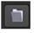
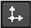

除了自动定义地平面、轴和原点之外，还可以使用 场景 标签的 场景变换 控制。这些控件的操作方式与其他转换工具的操作方式完全相同 核武器 .
要变换场景，请使用以下控件:
• 旋转顺序 -从下拉菜单中设置旋转的操作顺序，显示所有可能的轴向组合。
• 翻译 -设置场景的翻译值。可以通过在 3D 查看器中单击并拖动轴来调整平移值。
• 旋转 -设置值来旋转你的相机或使用 Ctrl / Cmd 在查看器中旋转相机。
• 规模 -在单个轴上设置刻度值，而不是均匀或使用 Ctrl / Cmd 转变 在查看器中缩放相机。
注意: 只有在单个轴上缩放场景时，才会显示此控件。
• 均匀刻度 -为你的场景设置一个比例。您还可以使用实际的测量来缩放场景，请参见 使用场景约束 欲了解更多信息。
或者，您也可以使用 本地 矩阵对场景进行变换。
注意: 的 世界 矩阵是只读的，无法编辑。
通道文件包含给定镜头中每个动画帧的一组笛卡尔坐标。您可以使用 Nuke 或 3D 跟踪软件 (如 3D 均衡器、 Maya 或 Boujou) 创建和导出它们。
您可以使用通道文件转换场景，方法是单击  按钮:
• 导入 chan 文件 -导入通道文件，并根据通道文件中的转换数据对输入对象进行转换。
• 导出 chan 文件 -将应用于输入对象的转换参数导出为通道文件。这是艺术家之间共享设置的有用方法。
“捕捉到” 菜单允许您匹配现有点的位置、方向和比例。
选择所需的点，然后单击  按钮:
• 匹配选择位置 -根据选定的点，将场景捕捉到新位置。
• 匹配选择位置，方向 -根据选定的点，将场景捕捉到新的位置和方向。
• 匹配选择位置、方向、大小 -根据选定的点，将场景捕捉到新的位置、方向和大小。
|
|